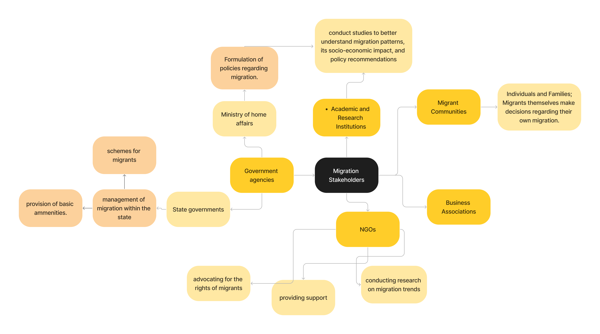
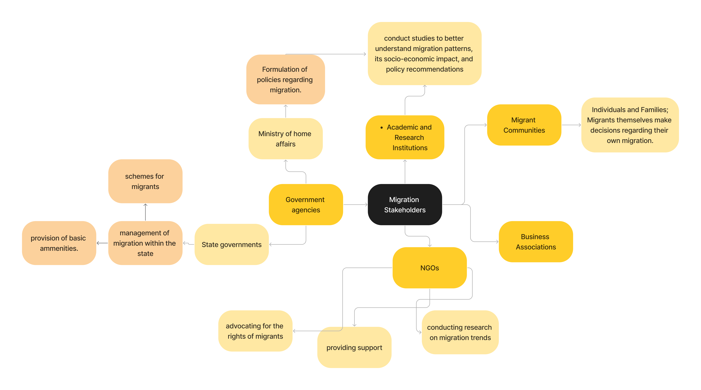

How have migration trends in India changed post Globalization (LPG reforms)?
Post globalization, mobility of people increased drastically, both within and outside the country. It is also far more easier than before, to migrate to more developed countries for better opportunities post globalization, as interconnectedness has increased. Within India, people began migrating from their native cities to other places for better job oppurtunities, income, education, standard of living etc.
 

India's map above shows that most no. of people that have migrated are the ones belonging to extremely densely populated states like UP and Bihar, Jharkhand etc. It is also important to note that metropolitan cities like Delhi, Mumbai and Bengaluru have the most amount of influx. Hence, Globalization has enabled people to move to urbanized areas due to better oppurtunities. Below are the percentages of male and female share of migrant workers among total workers in major urban sectors.